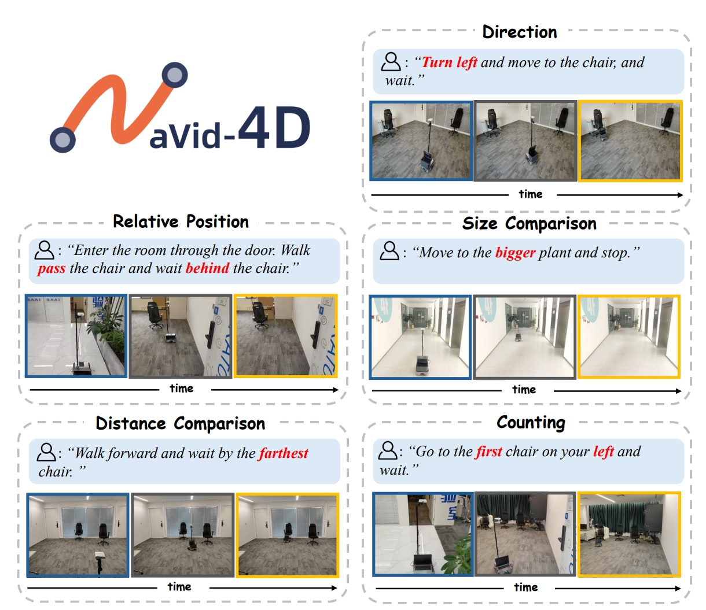

1CFCS, School of Computer Science, Peking University
2Galbot
3University of Science and Technology of China
4Shanghai Jiao Tong University
5Beijing Academy of Artificial Intelligence
* equal contributions
† corresponding author
Understanding and reasoning about the 4D spacetime is crucial for Vision-and-Language Navigation (VLN). However, previous works lack in-depth exploration in this aspect, resulting in bottlenecked spatial perception and action precision of VLN agents. In this work, we introduce NaVid4D, a Vision Language Model (VLM) based navigation agent taking the lead in explicitly showcasing the capabilities of spatial intelligence in the real world. Given natural language instructions, NaVid-4D requires only egocentric RGB-D video streams as observations to perform spatial understanding and reasoning for generating precise instruction-following robotic actions. NaVid-4D learns navigation policies using the data from simulation environments and is endowed with precise spatial understanding and reasoning capabilities using web data. Without the need to pre-train an RGB-D foundation model, we propose a method capable of directly injecting the depth features into the visual encoder of a VLM. We further compare the use of factually captured depth information with the monocularly estimated one and find NaVid-4D works well with both while using estimated depth offers greater generalization capability and better mitigates the sim-to-real gap. Extensive experiments demonstrate that NaVid-4D achieves state-of-the-art performance in simulation environment and makes impressive VLN performance with spatial intelligence happen in the real world.
To explicitly take 3D information input, we design a 3D-aware vision encoder which encode RGB and depth images separately. We first separate the first 20 layers of ViT to encode RGB and depth images into an aligned feature space, then share the last 20 layers to further process them. We use the weight pretrained on large-scale RGB images to initialize the vision encoder and freeze only the RGB layers. In this way we can avoid the high-cost pretraining of RGB-D foundation models while still be able to encode the 3D information explicitly.
@inproceedings{liu2025navid4d,
title={NaVid-4D: Unleashing Spatial Intelligence in Egocentric RGB-D Videos for Vision-and-Language Navigation},
author={Liu, Haoran and Wan, Weikang and Yu, Xiqian and Li, Minghan and Zhang, Jiazhao and Zhao, Bo and Chen, Zhibo and Wang, Zhongyuan and Zhang, Zhizheng and Wang, He},
booktitle={2025 IEEE International Conference on Robotics and Automation (ICRA)}
}
If you have any questions, please feel free to contact Haoran Liu at lhrrhl0419@stu.pku.edu.cn, Zhizheng Zhang at zhangzz@galbot.com, and He Wang at hewang@pku.edu.cn.